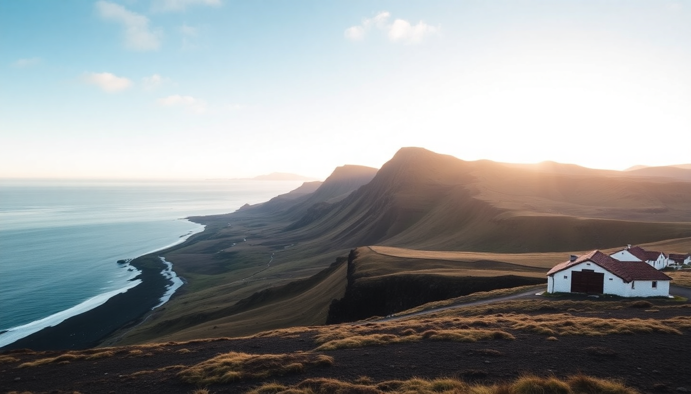

Where to Stay in Vik: Best Hotels for Every Budget

I rolled into Vik after a long drive along Iceland’s South Coast, tired and hungry. The town is tiny—maybe 300 people—but it’s the logical overnight stop between Reykjavik and the glacial lagoons further east. Over three trips, I’ve stayed in four different places here, from a cramped hostel bunk to a room with floor-to-ceiling windows facing the black sand beach. Here’s what I learned about where to sleep in Vik, broken down by budget and travel style.
What’s the best budget-friendly option in Vik?
If you’re watching your kronur, Vik Hostel is the most reliable bet. I stayed here on my first trip, and it’s exactly what you’d expect from an Icelandic hostel: clean, functional, and painfully expensive for what it is (but still the cheapest bed in town).
- Vik Hostel — Dorm beds start around 6,000 ISK. Shared kitchen is decent. Location is a 10-minute walk to the main strip.
- Vik Cottages — Small private cabins with basic kitchenettes. Good for two people splitting costs. No frills, but the privacy beats a dorm.
- Puffin Hostel — A newer option with capsule-style beds. Quieter than Vik Hostel, but farther from the restaurants.
My take: if you’re solo and just need a pillow, the hostel works. But if you’re two people, the math often favors a private room at a guesthouse—the price gap isn’t that wide.
Which mid-range hotels offer the best value?
The mid-range category is where Vik really shines. You’re not paying luxury prices, but you get solid comfort and often a view that’ll make your friends jealous.
Hotel Katla sits right at the edge of town, and I’d call it the best value for most travelers. The rooms are simple—think Ikea-chic—but the breakfast buffet is legit (fresh skyr, smoked fish, proper bread). I booked a standard double and ended up with a view of the Mýrdalsjökull glacier. No pool, but there’s a small sauna.
- Hotel Katla — Doubles from 22,000 ISK. Free parking. Breakfast included. Sauna access.
- Hotel Vík í Mýrdal — Right on the main road. Rooms are dated but spotless. The restaurant downstairs serves a decent lamb soup.
- Hótel Kría — Newer build, closer to the church. Friendly staff. Rooms are small but well-insulated—you won’t hear the wind howling.
One warning: “mid-range” in Iceland still means 20,000+ ISK a night. Adjust your expectations accordingly.
Is it worth splurging on a luxury hotel in Vik?
Yes—if you can swing it. Vik doesn’t have a ton of luxury options, but the ones that exist are memorable.
Ion Adventure Hotel is technically a 20-minute drive east of Vik, near Hella. I stayed here on my second trip, and it’s worth the detour. The architecture is stark and modern, with a lava-field backdrop. The restaurant is genuinely good—I still think about the arctic char. Rooms have heated floors and massive windows.
- Ion Adventure Hotel — Doubles from 45,000 ISK. Northern lights wake-up call service. Outdoor hot tubs.
- Black Beach Suites — In Vik proper. Apartment-style rooms with kitchenettes. The suites on the top floor have the best views of Reynisfjara.
- Hotel Ranga — 30 minutes west, near Hvolsvöllur. More traditional luxury—fireplaces, a wine cellar, and a hot tub under the stars.
The splurge is worth it if you’re celebrating something or just want a night of quiet. But don’t expect five-star service—this is Iceland, not Dubai.
What about guesthouses and farm stays?
This is my favorite way to stay in the Vik area. Guesthouses give you more space, a kitchen, and often a chance to chat with locals or other travelers.
Hólmur Cottages is a cluster of small houses on a working farm about 5 minutes north of Vik. I booked one on a whim and ended up extending my stay. The host left fresh eggs and bread in the fridge. The cottage had a tiny kitchen, a wood stove, and a view of sheep grazing in the meadow.
- Hólmur Cottages — Private cottages from 18,000 ISK. Self-catering. Farm animals for kids.
- Sólheimahjáleiga Guesthouse — Near Skogafoss, 20 minutes west. Historic farmhouse. Family-run. Great for a pre-hike breakfast.
- Vík Apartments — Not a farm, but apartment-style units in town. Full kitchens. Good for groups.
The catch: most farm stays require a car. You’re not walking to dinner from Hólmur. Plan accordingly.
Which hotels are closest to Reynisfjara black sand beach?
If you’re here for the beach—and you should be—you want to stay as close as possible. The drive from Vik to Reynisfjara is only 10 minutes, but parking fills up by 10 AM.
Black Beach Suites is literally across the road from the beach. I stayed here on my last trip. The rooms are modern, with floor-to-ceiling windows facing the ocean. You can hear the waves at night. It’s not cheap, but you’re paying for the location.
- Black Beach Suites — Doubles from 30,000 ISK. Direct access to the beach. No restaurant—bring your own food.
- Reynisfjara Guesthouse — A smaller option, just up the hill. Basic rooms, but the host is lovely and gives good tips on avoiding the sneaker waves.
- Vik Hostel — Not on the beach, but the cheapest option within walking distance (30-minute walk).
Pro tip: stay at Black Beach Suites if you want sunrise photos without the crowds. But watch the waves—the sneaker waves at Reynisfjara are no joke.
What’s the best area to stay in for dining and nightlife?
Vik’s “center” is basically one street—the Ring Road through town. Most restaurants and bars are clustered around the church and the gas station.
I stayed at Hotel Vík í Mýrdal on my first trip, and I liked being able to walk to Suður-Vík (great fish and chips) and The Soup Company (lamb soup in a bread bowl). The Skool Beans coffee truck is parked nearby—get the cinnamon roll.
- Hotel Vík í Mýrdal — Central. Restaurant on-site. Walking distance to everything.
- Hótel Kría — A 5-minute walk from the main strip. Quieter at night.
- Puffin Hostel — Farther out. You’ll want a car.
If you’re here for nightlife, adjust expectations. Vik has two bars—Smiðjan Brugghús (a brewery with good beer) and The Barn (more of a pub). Both close by 11 PM. This is not Reykjavik.
FAQ
Is Vik a good base for exploring the South Coast? Yes. Vik is the last town with proper services before you hit the glacial lagoons (Jökulsárlón is 2 hours east). I’ve used it as a base for day trips to Skogafoss, Seljalandsfoss, and the Fjaðrárgljúfur canyon. Just know that “day trip” in Iceland means 4–6 hours of driving round-trip.
Can I visit Vik without a car? Technically, yes—there are buses from Reykjavik. But you’ll be stuck in town. Most of the best sights (Reynisfjara, Dyrhólaey, Skogafoss) are a drive away. I wouldn’t recommend it without a rental car.
What’s the best time of year to stay in Vik? June through August for mild weather and long daylight. September and October for fewer crowds and possible northern lights. November through March is cold, dark, and windy—hotels are cheaper, but you’ll spend most of your time indoors.
Conclusion
- Budget travelers should book Vik Hostel or Puffin Hostel for the cheapest beds in town.
- Mid-range visitors get the best value at Hotel Katla or Hótel Kría—clean rooms, good breakfast, solid location.
- Splurgers should go for Black Beach Suites (beach access) or Ion Adventure Hotel (design and solitude).
- Self-caterers will love Hólmur Cottages or Vik Apartments for the kitchen and space.
- Book early—Vik’s hotel supply is tiny, and rooms sell out months ahead in summer.